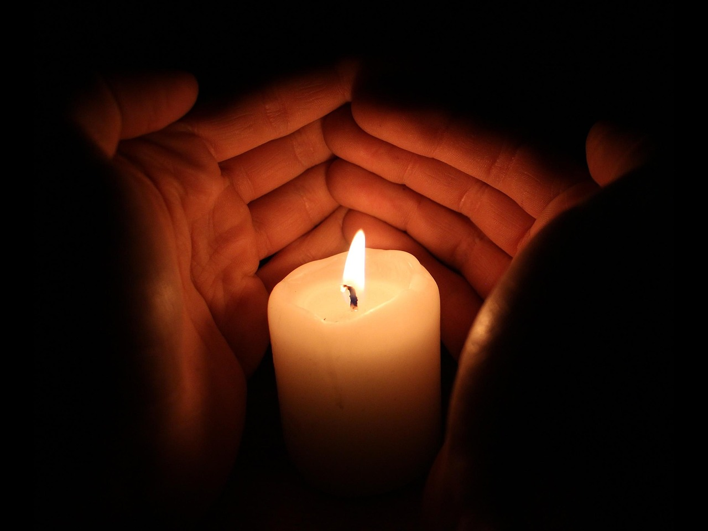
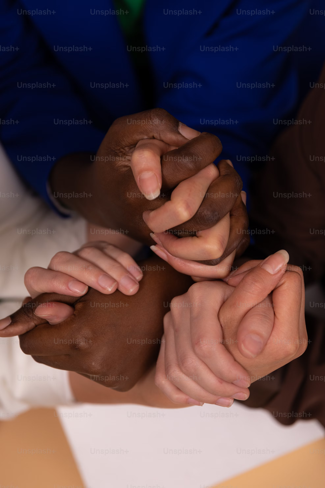
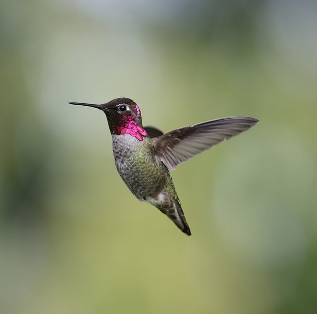
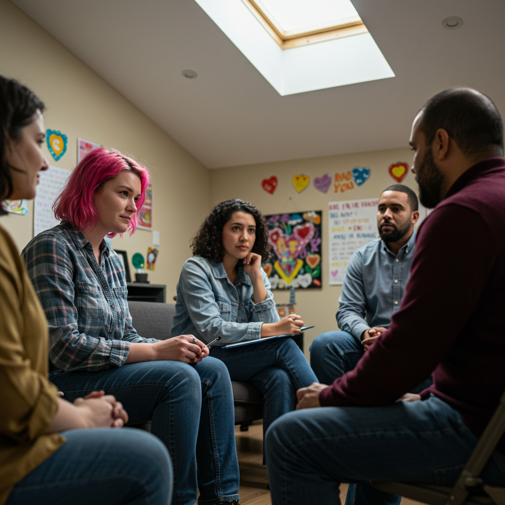

Compassionate support for those who have experienced loss.
Learn MoreSupporting the bereaved in rebuilding their lives by creating safe, compassionate spaces to share and process grief together. We believe in the power of community, empathy, and healing.
Programs and resources to help you navigate grief

Join a compassionate space to share and heal with others. Our facilitated 6-week groups offer support, tools, and community.
Learn moreWorkshops and training for individuals and organizations to better understand grief and provide support to others.
Learn moreAccess videos, articles, and guides to help you understand and move through your grief journey.
Learn moreStories from those who have found support through our programs
"The grief support group gave me a safe place to express my feelings when I felt so alone. This community has been a lifeline during the darkest period of my life."
"Attending the education workshops helped me understand how to support others in grief. The facilitators were knowledgeable and compassionate."
As a non-profit that receives no public funding, we rely on the support of our community. Your donation helps us continue to provide grief support programs and educational resources for those in need.
Donate Today